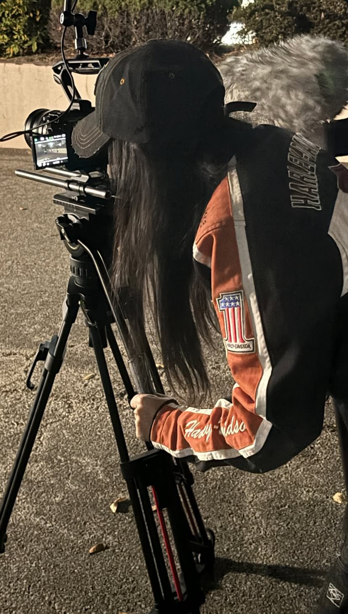
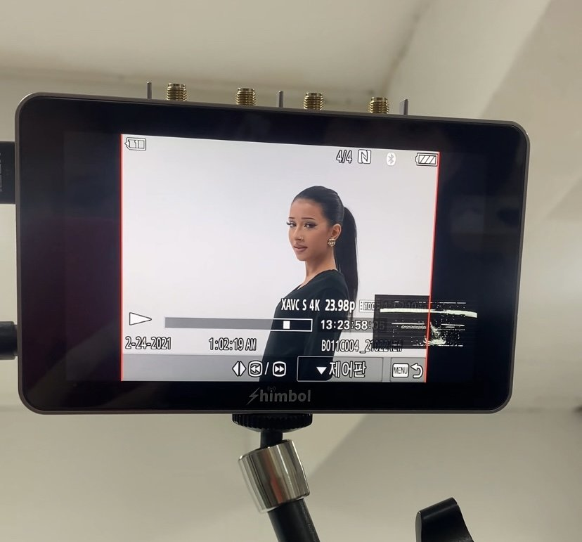
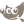

À propos de moi
À la croisée de la communication numérique, de la création audiovisuelle et du développement web, je conçois des contenus et des projets qui associent narration, créativité et réflexion stratégique.
Diplômée en communication numérique et en cinéma et audiovisuel, j’explore différents formats et supports : de la rédaction éditoriale et des projets de veille à la réalisation et au montage vidéo, en passant par la création graphique, la photographie et la conception d’expériences numériques interactives. Mes projets documentaires m’ont notamment amenée à travailler sur la recherche, les interviews, la coordination d’équipes et la production de contenus destinés au web.
Mon intérêt pour la culture numérique se prolonge dans le développement web et la visualisation de données. À travers des projets comme AudioGéoMap, je cherche à transformer des informations en expériences accessibles, interactives et porteuses de sens. Je m’intéresse également aux usages des réseaux sociaux, à l’analyse des performances numériques et à la manière dont les contenus peuvent toucher leurs publics.
Mon parcours m’a conduite entre la France et la Corée du Sud, où j’ai développé une approche interculturelle de la création et de la gestion de projets, renforcée par ma formation en coréen et mes expériences au sein de festivals et d’événements internationaux.
Curieuse, polyvalente et attachée au travail collectif, je souhaite aujourd’hui contribuer à des projets qui réunissent communication, image et innovation numérique, au sein d’équipes créatives en France comme à l’international.



EN BREF
LOGICIELS & OUTILS


